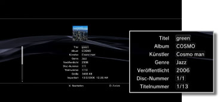

Musik > Abrufen oder Bearbeiten von Audio-CD-Informationen
Abrufen oder Bearbeiten von Audio-CD-Informationen
Abrufen von Musik-CD-Informationen
Wenn Sie eine Audio-CD einlegen, stellt das PS3™-System automatisch eine Verbindung zum Internet her und ruft Informationen zur CD ab. Um CD-Informationen abrufen zu können, müssen Sie zuerst die Endbenutzer-Vereinbarung akzeptieren, die auf dem Bildschirm angezeigt wird.
Anmerkungen
- Sie können CD-Informationen auch über das Menü „Optionen“ abrufen. Wenn das CD-Icon ausgewählt ist, drücken Sie die
 -Taste und wählen [CD-Informationen abrufen]. Gehen Sie zum Abschließen des Vorgangs nach den Anweisungen auf dem Bildschirm vor.
-Taste und wählen [CD-Informationen abrufen]. Gehen Sie zum Abschließen des Vorgangs nach den Anweisungen auf dem Bildschirm vor. - Wenn Sie keine CD-Informationen abgerufen haben, werden beim Einlegen einer CD in das System keine ausführlichen Album- und Titelnamen angezeigt.
Bearbeiten von Musik-CD-Informationen
Sie können die abgerufenen CD-Informationen bearbeiten. Mit gewähltem Musik-CD- oder Titel-Icon die -Taste drücken und dann [Informationen] aus dem Menü „Optionen“ wählen. Wählen Sie das zu bearbeitende Element aus.

Anmerkungen
- Sie können auch geänderte Informationen über das Internet an All Media Guide schicken, falls die CD-Informationen, die automatisch vom PS3™ System abgerufen wurden, nicht korrekt sind. Wählen Sie das Icon der Musik-CD, drücken Sie die -Taste und wählen Sie dann [CD-Informationen senden] aus dem Menü „Optionen“.
- All Media Guide stellt eine CD-Informationsdatenbank zur Verfügung.
- Sie können keine Informationen an All Media Guide schicken, wenn die Felder [Album], [Künstler] und [Genre] gar keine Informationen enthalten.
- Sie können keine CD-Informationen für Super Audio CDs ändern oder senden.
Hinweis
Super Audio CDs können auf einigen PS3™-Systemen nicht abgespielt werden. Näheres dazu finden Sie unter [Typen abspielfähiger Discs].